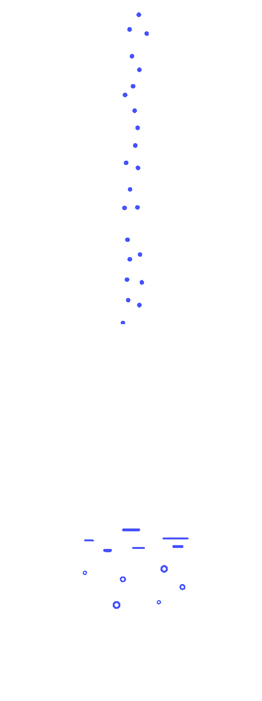
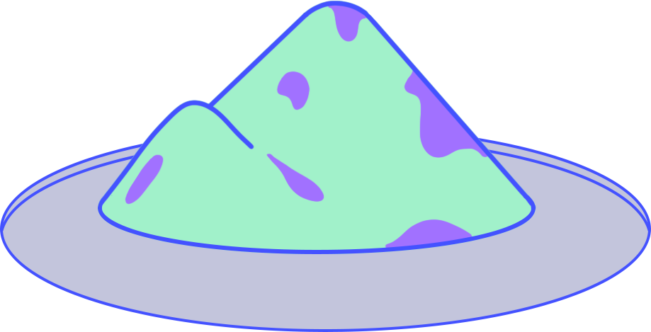

Ohne Frage leben wir in einer Welt, umgeben von Plastik. Wer genauer hinsieht, stellt fest, dass das Plastik nicht nur unsere komplette Umwelt durchdrungen hat, sondern auch unsere Körper.
We are living in a world surrounded by plastic. If you take a closer look, you will see that plastic has not only permeated our entire environment, but also our bodies.


Es sind Chemikalien und kleine Plastikteilchen, die sich negativ auf unseren Körper auswirken.
It is chemicals and small plastic particles that have a negative impact on our bodies.
 

 



Anwendungsbereich
Bisphenol A (kurz: BPA) ist Ausgangsstoff für die Herstellung verschiedener Kunststoffe (PC, Epoxidharze). Das BPA ist in diesem Fall chemisch gebunden und löst sich nur unter extremen Umständen heraus. Es kommt jedoch vor, dass bei den Herstellungsprozessen nicht das komplette Bisphenol A chemisch umgewandelt wird. Daher können Produkte aus diesen Materialien noch freie Bisphenol A-Reste enthalten.
Bisphenol A findet auch Verwendung als Additiv. Hier wird BPA als Stabilisator (für die Haltbarkeit / längere Lebensdauer des Kunststoffs) oder als Farbenwicklungskomponente verwendet. BPA ist in diesem Fall chemisch nicht gebunden und daher leicht herauslösbar.
Kontakt und Aufnahme
Wir nehmen Bisphenol A vor allem über Lebensmittel und Thermopapier auf. Bisphenol A kann durch heißes sowie kaltes Wasser herausgelöst werden (Hydrolyse). Wasch- und Spülmittel verstärkt das Herauslösen von BPA.
BPA steht in der Europäischen Union auch auf der Liste der gefährlichsten Chemikalien. Grundsätzlich verboten ist BPA jedoch nicht.
Area of application
Bisphenol A (BPA for short) is the starting material for the production of various plastics (PC, epoxy resins). In this case, the BPA is chemically bound and only dissolves out under extreme circumstances. However, it happens that not all of the bisphenol A is chemically converted during the manufacturing processes. Therefore, products made from these materials may still contain free bisphenol A residues.
Bisphenol A is also used as an additive. Here, BPA is used as a stabilizer (for durability/longer life of the plastic) or as a color-wrapping component. In this case, BPA is not chemically bound and can therefore be easily released.
Contact and ingestion
We absorb bisphenol A mainly through food and thermal paper. Bisphenol A can be dissolved out by hot as well as cold water (hydrolysis). Detergents and rinsing agents increase the dissolving out of BPA.
BPA is also on the list of the most dangerous chemicals in the European Union. However, BPA is not fundamentally forbidden.
Anwendungsbereich
Flammschutzmittel sind chemische Verbindungen, die den Flammpunkt eines Materials verändern können.
Es gibt gebundene und ungebundene Flammschutzmittel, letztere können sich leicht aus Produkten lösen.
Der größte Anwendungsbereich für Flammschutzmittel sind Elektronische Geräte; direkt danach kommt das Bauwesen.
Kontakt und Aufnahme
Flammschutzmittel finden sich in hoher Konzentration im Klärschlamm von Wasseraufbereitungsanlagen.
Dieser Schlamm wird entweder zum Düngen von Feldern verwendet oder verbrannt, wo er giftige Gase freisetzt.
Der Mensch kommt sowohl mit den Schadstoffen in der Luft, als auch mit den Produkten der gedüngten Felder in Kontakt.
Area of application
Flame retardants are chemical compounds that can change the flash point of a material. There are bound and unbound flame retardants, the latter can easily dissolve from products. The largest area of application for flame retardants is electronic equipment, followed by construction.
Contact and ingestion
Flame retardants are found in high concentrations in sewage sludge from water treatment plants. This sludge is either used to fertilize fields or burned, where it releases toxic gases. Humans come into contact with both the pollutants in the air and the products of the fertilized fields.
Anwendungsbereich
Phthalate sind Industriechemikalien, die vor allem als Weichmacher für Kunststoffe Verwendung finden. Ohne sie wäre dieser Kunststoff viel zu hart und brüchig für viele Anwendungen.
Kontakt und Aufnahme
Da die Phthalate als Weichmacher nicht chemisch an den Kunststoff gebunden sind, können sie bei Kontakt mit dem Körper durch das Fett in der Haut, durch Schweiß oder durch Speichel gelöst werden und so in den Körper gelangen.
Aufgrund der lipophilen (fettliebenden) Eigenschaften von Phthalaten, ist es auch möglich, die Weichmacher über fetthaltige Nahrungsmittel (z.B. Speiseöl), die Kontakt zu dem Kunststoff hatten, zu sich zu nehmen.
Ferner gasen Phthalate aus weichgemachten Kunststoffen aus und belasten so die Innenraumluft – besonders relevant bei großflächigen Produkten wie Kunststofftapeten oder Bodenbelägen.
Wir nehmen die Weichmacher vor allem über die Luft und die Nahrung auf. Fast bei jedem sind Phthalate oder ihre Abbauprodukte (Metabolite) im Blut und/oder im Urin nachweisbar.
Area of application
Phthalates are industrial chemicals that are used primarily as plasticizers for plastics. Without them, these plastics would be far too hard and fragile for many applications.
Contact and ingestion
Since phthalates as plasticizers are not chemically bound to the plastic, they can be dissolved by the fat in the skin, by sweat or by saliva when they come into contact with the body and thus enter the body.
Due to the lipophilic (fat-loving) properties of phthalates, it is also possible to ingest the plasticizers through fatty foods (e.g. cooking oil) that have had contact with the plastic.
Furthermore, phthalates outgas from plasticized plastics and thus pollute indoor air - particularly relevant for large-area products such as plastic wallpaper or floor coverings.
We absorb the plasticizers primarily through the air and food. Phthalates or their degradation products (metabolites) can be detected in the blood and/or urine of almost everyone.
Anwendungsbereich
Schwermetalle werden als Zusatzstoffe für Plastikprodukte verwendet, um die Eigenschaften des Kunststoffs zu verändern und zu verbessern. Sie werden als Hitze- und UV-Stabilisatoren, als anorganische Flammschutzmittel und als Farbpigmente verwendet.
Unter Schwermetalle fallen alle Metalle mit einer Dichte über 5g pro Kubikzentimeter.
Schwermetalle kommen natürlich in der Umwelt vor.
Einige von Ihnen sind lebensnotwendig (Eisen, Zink), andere dagegen hochgiftig (Blei, Cadmium oder Quecksilber).
Kontakt und Aufnahme
Studien haben gezeigt, dass Kunststoffverbindungen freie Schwermetalle aufnehmen können. In einem Versuch wurde nachgewiesen, dass PVC freigewordenes Zink und Kupfer aus Meerwasser aufgenommen hat.
Diese Tatsache führt dazu, dass Mikroplastik in der Umwelt vorhandene Schwermetalle aufnehmen kann und somit in die Nahrungskette von Fischen und schließlich zum Menschen gelangt.
Area of application
Heavy metals are used as additives for plastic products to modify and improve the properties of plastic. They are used as heat and UV stabilizers, as inorganic flame retardants and as color pigments.
Heavy metals include all metals with a density greater than 5g per cubic centimeter. Heavy metals occur naturally in the environment. Some of them are essential for life (iron, zinc), while others are highly toxic (lead, cadmium or mercury).
Contact and ingestion
Studies have shown that plastic compounds can absorb free heavy metals. In one experiment, PVC was shown to absorb released zinc and copper from seawater. This fact leads to the fact that microplastics can absorb heavy metals present in the environment and thus enter the food chain of fish and eventually to humans.


Marlene Hilbig (Design, Illustration)
Lukas Meitz (Programmierung)
Informationen zum Projekt
Diese Website entstand im Rahmen einer Lehrveranstaltung
(Datenvisualisierung) an der Hochschule Augsburg. An diesem Projekt nahmen
Studierende der Masterstudiengänge Interaktive Mediensysteme und
Informatik teil. Die Betreuung erfolgte durch Herrn Prof. Wolfgang
Kowarschick und Herrn Prof. Michael Stoll.
Dienstanbieter gemäß § 5 Abs. 1 TMG und § 55 Abs. 1 RStV
Hochschule für angewandte Wissenschaften Augsburg
An der Hochschule 1
86161 Augsburg
Telefon: +49 821 5586-0
Fax: +49 821 5586-3222
info@hs-augsburg.de
Vertretungsberechtigte Person:
Präsident Prof. Dr. Gordon Thomas Rohrmair gem. Art. 21. Abs. 7 BayHSchG
Redaktion
Marlene Hilbig und Lukas Meitz
Hochschule für angewandte Wissenschaften Augsburg
Fakultät für Gestaltung und Fakultät für Informatik
An der Hochschule 1
86161 Augsburg
Email: marlene.hilbig@hs-augsburg.de lukas.meitz@hs-augsburg.de
Fakultät für Gestaltung
Telefon: +49 821 5586-3401
Fax: +49 821 5586-3422
Fakultät für Informatik
Telefon: +49 821-5586-3475 (Sekretariat-3450)
Fax: +49 821 5586-3499
Konzeption, Design und Umsetzung
Das Konzept und die Umsetzung stammt von Marlene Hilbig, Lukas Meitz und Dany Leonnel Kenne Keubou
Urheberrechte
Alle medien (Texte, Biler, Videos, Programme, Code-Beispiele etc.) und alle
Gestaltungselemente dieser Web-Site sind - sofern nicht ein anderes
Copyright angegeben ist - für Marlene Hilbig, Lukas Meitz und Dany Leonnel Kenne Keubou urheberrechtlich geschützt.
ZSt-IdNr. der Hochschule Augsburg
DE 811335517 (Staatsoberkasse Bayern, Landshut)
Rechtsform
Die Hochschule Augsburg ist Körperschaft des öffentlichen Rechts gemäß
Art. 11 Abs. 1 Satz 1 Bayerisches Hochschulgesetz und zugleich staatliche
Einrichtung, Art. 11 Abs. 1 Satz 2 Bayerisches Hochschulgesetz. Sie nimmt
eigene Angelegenheiten als Körperschaft (Körperschaftsangelegenheiten),
staatliche Angelegenheiten als staatliche Einrichtung wahr - Art. 12 Abs. 1
Bayerisches Hochschulgesetz
Zuständige Aufsichtsbehörde
Bayerisches Staatsministerium
für Wissenschaft und Kunst
80327 München

Kontakt und Aufnahme von Kunststoffen, Auswirkungen von Schadstoffen, Bisphenol A
Contact and absorption of plastics, impacts of chemicals, Bisphenol A
Fuhr, Lili/ Buschmann, Rolf/ Freund, Judith [Hrsg.]: Plastikatlas 2019; Daten und Fakten
über eine Welt voller Kunststoff; 3.Aufl., Lahr 2019.
(Onlinepublikation:
https://www.boell.de/sites/default/files/2019-11/Plastikatlas_2019_3._Auflage.pdf.)
Auswirkungen von Schadstoffen (u.a. Schwermetalle, Flammschutzmittel), Aufnahme von Schadstoffen
Impacts of chemicals (Heavy Metals, Flame Retardants), absorption of chemicals
Campanale, Claudia/ Massarelli, Carmine/ Savino, Ilaria/ Locaputo, Vito/ Vito Uricchio,
Felice [Hrsg.]: A Detailed Review Study on Potential Effects of Microplastics and Additives
of Concern on Human Health (Stand: 13. Feb. 2020).
https://www.ncbi.nlm.nih.gov/pmc/articles/PMC7068600/#B18-ijerph-17-01212. (21.01.21)
Aufnahme von Schadstoffen, Kontakt mit Produkten
Absorption of Chemicals, Contact with products
Azoulay,David/ Villa, Priscilla/ Arellano, Yvette/ Gordon , Miriam/ Moon, Doun/ Miller,
Kathryn/ Thompson, Kristen [Hrsg.]: Plastic & Health: The Hidden Costs of a Plastic Planet
(Stand: Feb. 2019).
https://www.ciel.org/wp-content/uploads/2019/02/Plastic-and-Health-The-Hidden-Costs
-of-a-Plastic-Planet-February-2019.pdf. (21.01.21)
Größenvergleich, Mikroplastik
Proportions, Microplastics
Ziemann, Saskia et al.: Was ist Mikro‐und Nanoplastik? Was wir bisher wissen und was
noch nicht (Stand: Jun. 2019).
https://mobil.bfr.bund.de/cm/343/was-ist-mikro-und-nanoplastik.pdf. (20.01.21)
Größenvergleich
Proportions
Embacher, Franz: Größenordnungen in der Mikrowelt (Stand: Jun. 2010).
https://homepage.univie.ac.at/franz.embacher/groessenordnungenNano.html. (20.01.21)
Auswirkungen von Schadstoffen, Phthalate
Impacts of Chemicals, Phthalates
Stiftung Warentest: Phthalate; Was Sie über die Weichmacher wissen sollten
(Stand: Jul. 2019).
https://www.test.de/Phthalate-Was-Sie-ueber-die-Weichmacher-wissen-sollten-
5368775-0/#question-2. (20.01.21)
Auswirkungen von Schadstoffen
Impacts of Chemicals
Umweltbundesamt: Häufige Fragen zu Phthalaten bzw. Weichmachern
(Stand: Nov. 2016).
https://www.umweltbundesamt.de/themen/gesundheit/umwelteinfluesse-auf-den-
menschen/chemische-stoffe/weichmacher/haeufige-fragen-zu-phthalaten-bzw-weichmachern
#besteht-ein-gesundheitliches-risiko-fur-verbraucherinnen-und-verbraucher-durch-
die-phthalataufnahme-aus-lebensmitteln-und-anderen-quellen. (20.01.21)
Schwermetalle
Heavy Metals
Havlat, Oliver: Gefahren für die Gesundheit durch Plastik (Stand: 16.04.2020).
https://www.verbraucherzentrale.de/wissen/umwelt-haushalt/wohnen/gefahren-fuer-
die-gesundheit-durch-plastik-7010. (20.01.21)
Allnatura Vertriebs GmbH & Co. KG: Schwermetalle (Stand: 2020)
https://www.allnatura.de/allnatura-essenziell/gepruefte-produkt-qualitaet/schadstoff
-lexikon/schwermetalle.html. (21.01.21)
Flammschutzmittel
Flame Retardants
Ittershagen, Martin: Flammschutzmittel in Produkten (Stand: 29.04.2016)
https://www.umweltbundesamt.de/themen/wirtschaft-konsum/produkte/schadstoffe-
in-produkten/flammschutzmittel-in-produkten. (20.01.21)